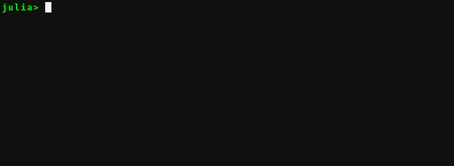

Bracket completion
Will insert a matching closing bracket to an opening bracket automatically if this is deemed likely to be desireable from the context of the surrounding text to the cursor. This is disabled by default on Windows because it interacts badly with pasting code with the default windows terminal.

Settings
Can be disabled or enabled with enable_autocomplete_brackets(::Bool).